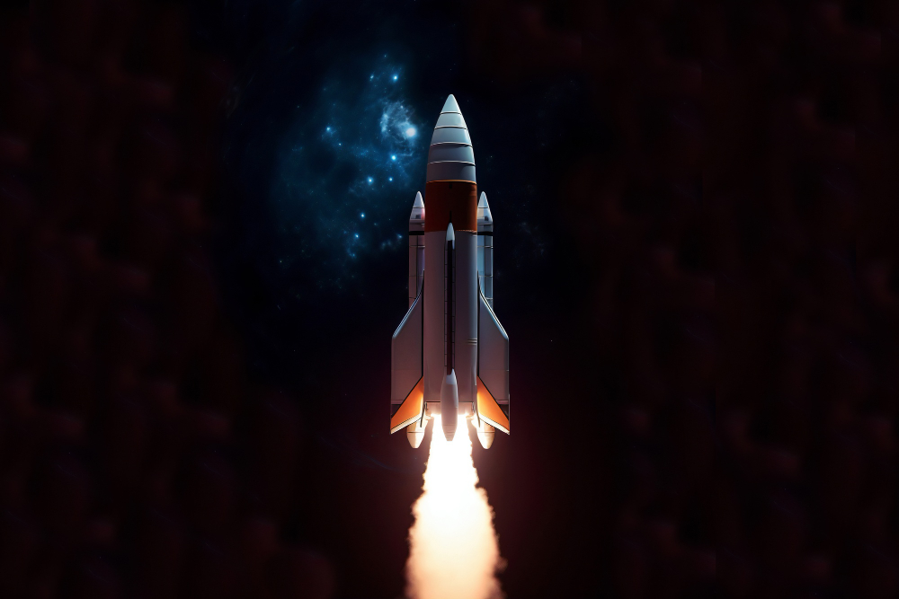

09 de Abril de 2023
Em qual área devo me especializar?
Quase um ano se passou e me vi diante da pergunta: "Em qual área devo me especializar?". Com tantas opções e oportunidades disponíveis, considerei ser um desenvolvedor de jogos ou de aplicativos móveis, entre outras opções que passaram pela minha mente. No entanto, decidi me tornar um desenvolvedor web full stack e, assim, iniciei uma nova jornada em 9 de abril de 2023.
21 de Maio de 2023
Papo Coaching!!kk

Embora eu não saiba exatamente o que o futuro reserva para mim, há uma certeza que tenho: foguete não tem ré. Independentemente dos desafios que surgirem no meu caminho, sei que serei capaz de superá-los. Tenho uma determinação inabalável, fé e um foco incansável. Rumo a liberdade geográfica, posso levar algum tempo, mas vou alcançar meus objetivos. Aos poucos, estou construindo um futuro incrível que meu eu do futuro irá agradecer.